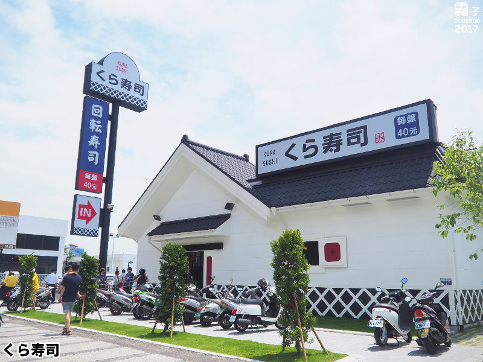

企業理念

對「美味」的堅持自創業初期以來，即秉持提供給消費者安全 、
健康、無負擔的美食享受為原則，堅持以「食物的原貌」、「不使用合成食材」、
「每盤均一價」的平價定位來提供。
對「安心」的堅持
花費多年時間研發而成的「鮮度君」獨家專利保鮮蓋能有效杜絕空氣中的飛沫，
並透過IC晶片控管，更能確切掌握每盤壽司的鮮度，只要超過時間系統會自動通知，確保消費者食的安心。
對「舒適、有趣的用餐環境」的堅持
長年來始終站在消費者立場研發多項專利，陸續導入領先於業界的各項嶄新服務，
如「BIKURA-PON」，連結盤子自動回收系統，不止隨時保持舒適的用餐環境、節省人力計算的時間，
更透過每5盤的遊戲與獨家扭蛋，帶給消費者革命性的用餐新體驗。
品牌故事
發展沿革
創新服務
心得